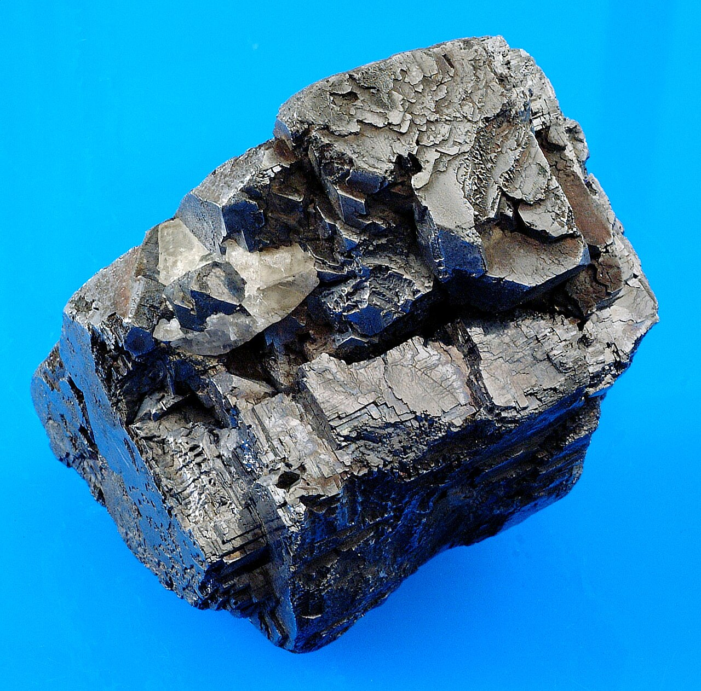

Androdamas
The names Androdamas, Androdamantus, Androdamanta, Andromanta, Andromadas, Androa, and Andromantes are preserved in two differing forms. One is silver-white, cubical, and found by the Red Sea; ¹ ² ⁴ ⁵ the other is black, heavy, and hard, chiefly from Africa. ¹ ³ The first calms anger and passionate impulses; ¹ the second attracts metals and turns blood-red when ground or rubbed in water. ¹ ³
Generic
Description
Lapidary accounts preserve both a silver-bright, cubical stone from the Red Sea and a black, heavy, hard stone chiefly from Africa. ¹ ² ³ ⁴ ⁵ Their descriptions and virtues differ, so they are treated below as distinct forms rather than as one uniform appearance.
Properties
Variants
| Subtype | Names and appearance | Found in | Properties |
|---|---|---|---|
| Subtype I: Silver-White Red Sea Androdamas | Androdamas, Androdamanta, Andromanta, Andromadas, and Androa; silver-bright or white, cubical or square, heavy and hard as Diamond. | Sands by the Red Sea. ¹ ² ⁴ ⁵ | Calms rage and passionate or rash impulses; also mitigates lust and sadness and lessens bodily heaviness. |
| Subtype II: Black African Androdamantus | Androdamantus and Andromantes; black, heavy, and hard. ¹ | Chiefly Africa is given for Androdamantus; no place is given for Andromantes. | Attracts silver and bronze or brass; ³ when ground it turns blood-red, and when rubbed and placed in water it stains the water blood-red, like Hematite. |
Subtype I: Silver-White Red Sea Androdamas

The image shows Galena-Calcite-217491.jpg (source).

This form is silver-bright or white, square like a die, and hard as Diamond. ² It is found in sand by the Red Sea. ¹ ² ⁴ ⁵ It calms rage, violent passions, and rash impulses of the mind; it also lessens sadness and heaviness and mitigates lust. ² Andromaia is a silver-coloured, four-cornered form that restrains sudden passions and anger. ⁷
Subtype II: Black African Androdamantus

The image shows Galena (source).

This black, heavy, hard form attracts silver and bronze or brass. ¹ Ground up, it turns blood-red like Hematite; ³ when rubbed and placed in water, it stains the water blood-red. ¹ Androdamantus is chiefly found in Africa. ³
Sources
1. Camillo Leonardi — Speculum Lapidum: Androdamanta and Andromantes
Androdamanta or Andromadas is a heavy and very hard stone, just like the diamond, which has the clarity of polished silver. Its form is defined by squares and lines. It is found in the sand of the Red Sea. It is believed that it bears the name of its virtue, since it stops anger and the impulses of the mind to act rashly. Its name comes from the Arab tongue. Its virtue is that of mitigating lust and lessening the body’s weight. Androa is the same as Androdamanta.
Andromantes is a black-colored stone, heavy and hard. It is said to attract silver and brass, as the magnet does with iron. Rubbed and placed in water, it stains it the color of blood, just like hematite does.
2. St. Albertus Magnus — The Book of Minerals, Tractate II, Andromanta
Andromanta is a stone of a silvery colour, which occurs mostly in the Red Sea. It is square like a die and as hard as adamas. It has power against rage and easy excitement of the mind and sadness and heaviness.
3. St. Isidore of Seville — Etymologies XVI.IV.17, Androdamantus
Androdamantus is black in color, noted for its heaviness and hardness, whence it takes its name (cf. ἄνδρας δαμάζειν (andras damazein, “subdue men”); ἀδάμας (adamas, “adamant”)). It is chiefly found in Africa. It is said to attract silver and bronze to itself, and, like Hematite, it turns the color of blood when ground up.
4. St. Isidore of Seville — Etymologies XVI.XV.8, Androdamas
Androdamas has the gleam of silver and is nearly a Diamond. It always occurs squared off into cubes. Magicians think that its name was assigned because it is said to calm and restrain passions and rages of the soul, if we may believe it (cf. ἀνδροδαμάς (androdāmas, “taming”), and iv.17 above). It is found by the Red Sea.
5. Marbodus of Rennes — De lapidibus, XLVIII
Th' Androdamas, in figure like a die,
In whiteness may with silver's lustre vie:
Hard as the Diamond, found in shifting sand,
Tossed by the wind along the Red Sea's strand;
As Magians teach endued with mighty power,
To cool the soul with fury boiling o'er.
6. Thomas Cantimpre — Liber de natura rerum, Book XIV: “On Precious Stones”, Andromanda
Andromanda is a square stone, exceedingly hard like diamond, silver in colour, and found in the Red Sea. It possesses such power that it can calm a mind burning with fury. It also restrains lust.
7. Bartholomaeus Anglicanus — De proprietatibus rerum, Book XVI, Chapter 15: Andromaia
Andromaia is like thereto in colour: and is a stone with colour of silver, as Isidore says. And is four cornered in shape, as the corner of a Diamond. And Witches believe that it has that name for that it refrains sudden passions, and wrath of hearts, as Isidore says, cap. de Gemmis aureis.